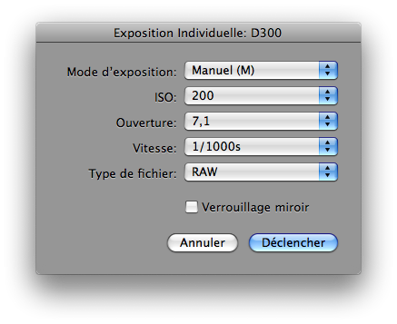

Test d’Exposition Individuelle avec un APN
Pour prendre une exposition individuelle de test avec les réglages voulus sur chaque APN connecté, vous devez ouvrir la fenêtre Exposition Individuelle dans Lunar Eclipse Maestro.
-
Dans le menu APN, sélectionnez Exposition unique avec réglages…

-
Réglez ensuite le mode d’exposition, la sensibilité ISO, l’ouverture et la vitesse de l’obturateur avant de déclencher la prise de vue sur l’appareil photo numérique.
En fonction du mode d’exposition sélectionné, certains réglages peuvent être désactivés. Par exemple, en mode Auto-Programmé (P), les réglages d’ouverture et de vitesse sont désactivés.
Note : sur les APNs Canon possédant un sélecteur rotatif, le mode d’exposition ne peut être modifié directement depuis l’application. Cette restriction ne s’applique pas aux APNs Nikon.
|